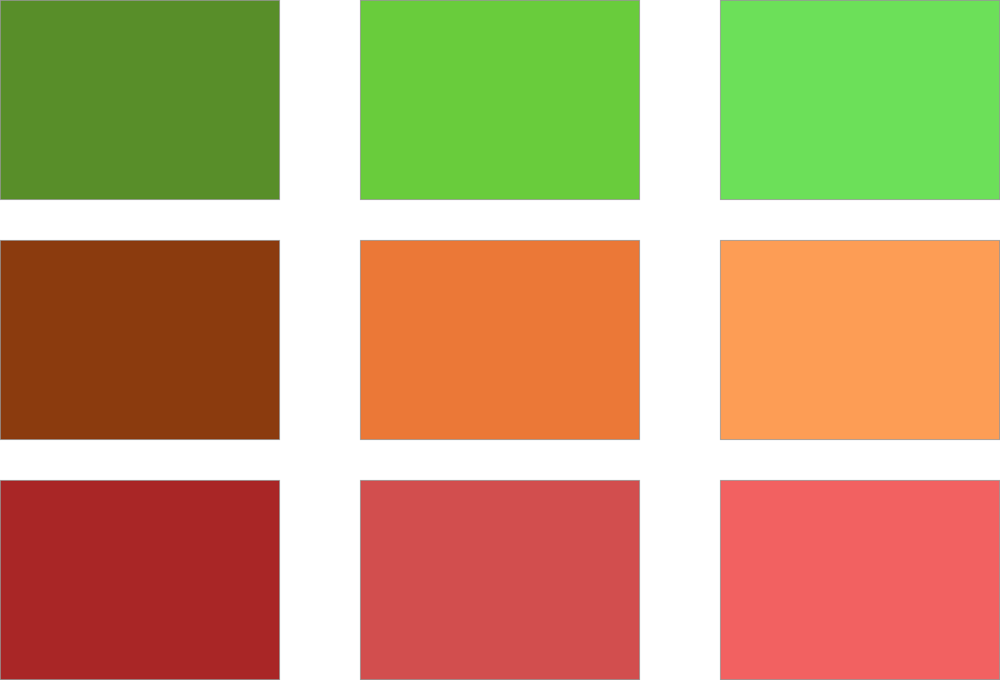
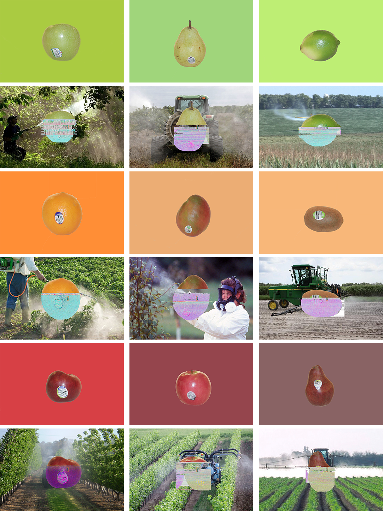

Fruit F*** Up
Overview
It was my last semester of my final year of undergrad when my professor, Jason VanStaveren, gave us this project. It took me a while before I knew how to approach it, you see the task was to destroy something and reconstruct a new image. We weren’t limited to any type of medium but the work had to presented either digitally or in prints.
So to make things easier and to avoid the annoyance of miscommunication I thought about an application that would make things easier for roommates. The purpose would be to keep the house organized when it came to what is needed and what’s coming next. something that can help you with bills, groceries, deliveries, lease agreements to thermostat control, light control, and the energy use.
The Beginning
So, I had the task but now I had to figure out how to go about deconstructing and then rebuilding with a purpose. At the time of the project I had begun a switch to a healthier lifestyle and therefore would often buy a lot more fruits and foods I thought to be healthy. But, it turns out I was not exactly right . . .
While on a FaceTime call with my brother in Ghana I noticed the size of his tomatoes and how much smaller they were than the one’s I would see in Walmart. His produce was grown in the back garden and I had no idea where mine came from, I decided then that this is what I would destroy and build.
The Research
I needed a way to display what I had in mind in a clear and cut manner so as to get my point across and without having to compromise the execution.
I had some knowledge on GMO’s but not enough for that to be my only source of information. But, I did know that they were pretty much all over the farming and agriculture industries so I decided to look more into it. The more and more I looked I kept coming across one main company in particular, Monsanto. So I focused in on them.
While browsing their website I stumbled across there company pledge, which I found to be very ironic, and then it hit me. This will be the method of destroying the fruits. Just to amplify the irony that much more.
View the pledge
The Execution
I had my task. I had my solution. I had the objects I would use. Now, what’s the best way for me to destroy and reconstruct with the information that I had gathered? My first thought was to physically ruin the fruits and then build something new with them but then that would leave out the pledge. So I decided to go with a digital method of destruction, the glitch method.
I started out by color sorting the fruits that I had in my kitchen and then taking pictures of them against a white background.

I have the photos and how I’m going to destroy them but the original background makes the whole project so much visually less appealing. So, how can I make it more attractive and distinct between the “corrupt” and the “pure” fruits? I took a color sample from each fruit and decided to make that the background. They created a nice flow from red to orange to green and gave the “pure” fruits a more clean look. Like how they are presented in the store.

To destroy the fruits I opened the images I had taken in a text editor and placed the pledge from Monsanto into the code that made the image, destroying it from within. I then placed the Monsanto logo in the middle of the fruit, just as you would see the stickers on the fruit in the stands. For the corrupt fruit I chose a background image of workers spraying crops, produce, and fruits with pesticides.
For the presentation I placed the corrupt fruit in rows below the pure ones to offer a clear contrast of what it looks like you’re getting and what you actually are getting.
